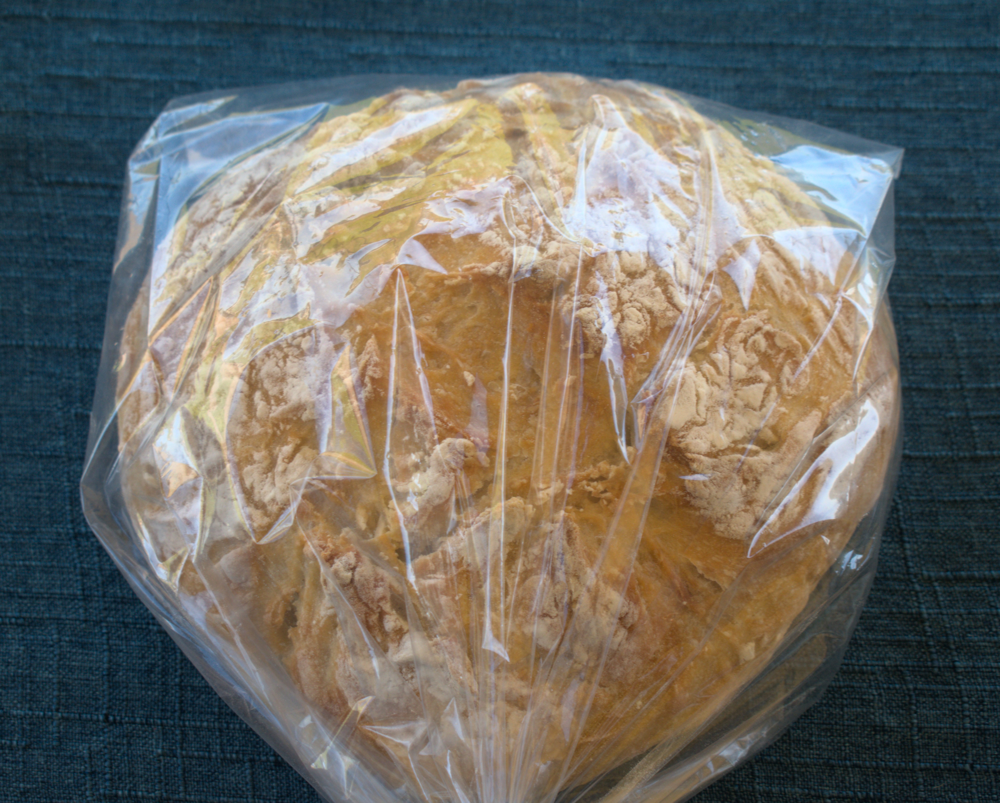

Sourdough Bread
Ingredients
- ½ cup active sourdough starter
- 1 ¼ cup lukewarm water
- 3 cups all-purpose flour
- 1 ½ teaspoons fine sea salt
- In a large bowl, combine the starter and water.
- Stir in the flour, and then add the salt.
- Keep the rough dough in the bowl, cover it, and let sit for 30 minutes.
- After this resting time is complete, stretch and fold the dough a few times to form it into a ball.
- Cover the dough with a clean dish towel and let it rise in a warm place overnight or until doubled in size (or about 8 hours). I like to make the dough before bed and leave it in my turned-off oven (I leave the oven light on) to rise overnight.
- The next morning (or after 8 hours), turn the dough out on your counter. Fold it over a couple of times to tighten it into a ball, then let sit for 15 minutes.
- Cover and rise for 2-3 hours, or until doubled.
- Preheat the oven to 450°F.
- Place the lid on the pot and bake for 20 minutes.
- Remove the lid and bake for an additional 30 minutes, or until the loaf is deeply browned and crispy on top. (For a less crusty finish, bake for the entire time with the lid on.)
- Move to a cooling rack and allow the loaf to cool completely before slicing it.